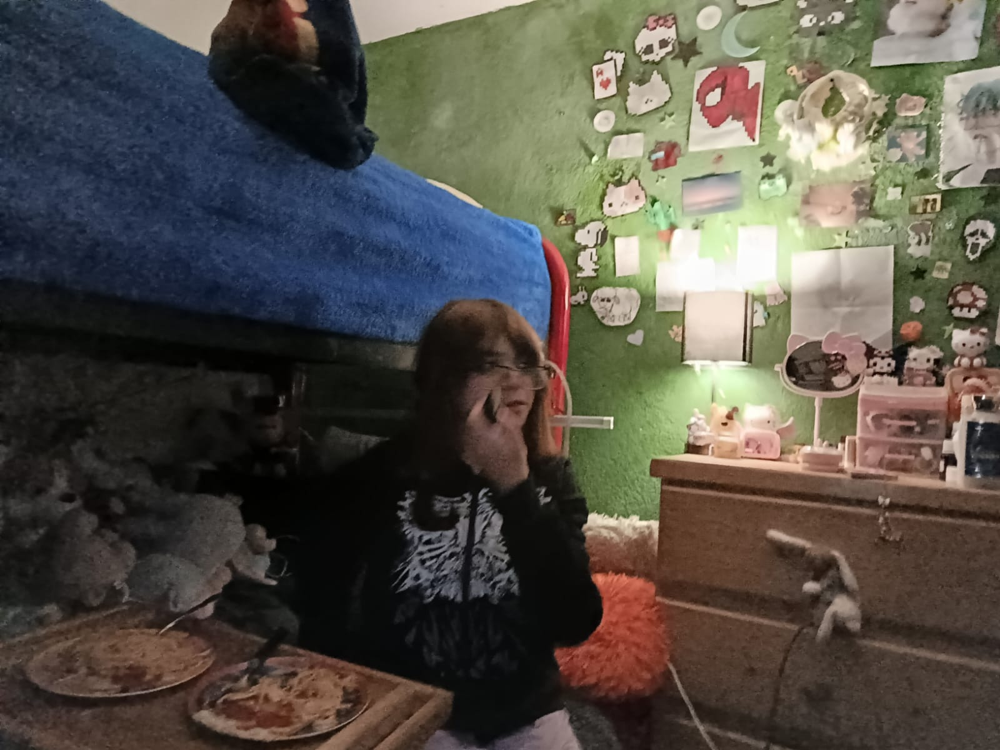
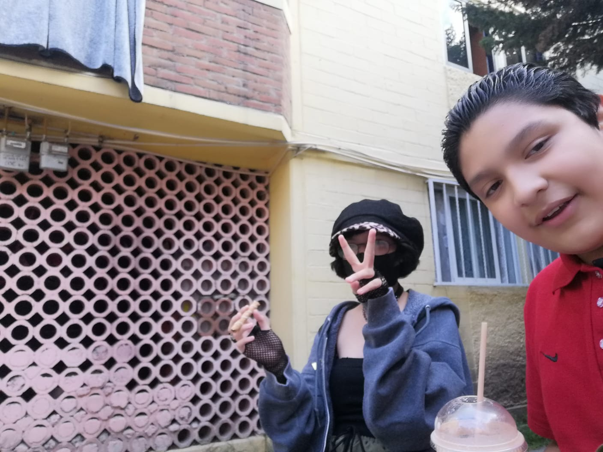
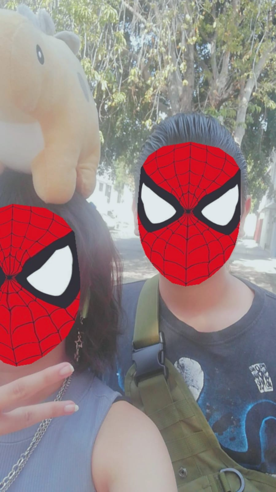

Querida Ari
¡Hola!, buenos días, espero estés teniendo un buen día hoy. Hoy me decidí a escribirte una carta, aunque no sea realmente una carta yo la veo como una. Y bueno creo que quiero escribirte algo especial

¿Qué te hace especial para mi?
Bueno, realmente yo creo que eres especial por varias cosas, y bueno quiero darme el tiempo de escribir cada una de ellas a detalle

Primero, eres mi primera y más especial amiga, has estado conmigo desde el principio, desde que entre a la primaria y tuve conciencia de mi mismo supe que eras tú, tu eras la persona más importante de mi vida, Y aunque casi nunca lo digo o lo mencioné, tú eres mi persona favorita Jaz, Fuiste tu la primera persona en ser amable conmigo y tratarme bien, Desde la vez que te vi y hablé contigo me mostraste que eras una buena persona y alguien en quien se puede confiar
Desde que hablamos por primera vez no dudaste en prestarme tus cosas aunque suene tonto, para mí fue algo genial, porque tú me compartiste algo que yo no había traído y necesitaba, no dudaste en compartirlo conmigo aunque no lleváramos mucho tiempo de conocernos, Fuiste tu la primera verdadera amistad que tuve y desde entonces tienes un lugar en mi corazón que nadie más ha tenido,Y que nadie más tendrá
A parte de mi familia, eres verdaderamente la única persona a la que yo amo, con todo mi ser y si necesitaras un transplante de corazón créeme que sería el primero en intentarlo

Segundo, eres la persona más carismática que conozco, cada momento contigo es especial, ya sea un día aburrido, un simple mensaje tuyo lo convierte en un día memorable, Y a veces incluso me haces sentir especial a mi y eso lo valoro mucho, porque en un mundo en el que todos me tratan diferente en algun aspecto o me hacen sentir menos, tu y solo tú me haces sentir bien, me haces sentir seguro, Cuando estamos juntos, mi mundo tiene sentido, todas mis acciones, mis emociones, lo siento todo, y logro ver, logro entender lo que sucede a mi alrededor gracias a ti, tu me das una razón para vivir aún si no tuviera una, tu me haces sentir grande, me haces sentir que realmente brillo y gracias a ti me siento feliz, gracias a ti sigo adelante y no dejo de luchar día a día
Por ti hago manualidades que me frustra hacer, porque se que vale la pena, porque eres lo más valioso de mi vida entera, Realmente y te lo digo, no se que haría sin ti, creo que me volvería loco y no se, quizá sería una persona desagradable
Tercero, Eres un símbolo de esperanza para mí, cada simple acción, cada simple pasó que das, cada respiro que tomas, me hace sentir mejor, me hace saber que vale la pena seguir viviendo, Me llena de esperanza y vitalidad el simple hecho de hablar contigo, me lo demostraste hace un rato, me sentía mal, pero solo hablar contigo de lo que sea me hizo sentir mejor, Me das una razón para no rendirme con nada
Todo lo que haces por mi, por la gente a tu alrededor incluso gente que no conoces realmente, eres un alma noble Jaz, una persona realmente maravillosa y simplemente genial, me apoyaste y seguiste siendo mi amiga aún cuando me viste mal, aún cuando todos mis amigos me dejaron, tu seguiste ahí, desde el principio desde siempre has estado conmigo
Aún cuando yo estuve en silla de ruedas, aún cuando yo me rompí un brazo, aún cunado no íbamos en la misma escuela, tu seguiste ahí, y no solo para mí, también para tus amigas y para la gente que te rodea, Aún cuando se portan mal contigo tu les demuestras que eres diferente, que realmente eres buena persona y no simulas serlo
Y aún cuando tú ya no podías más, cuando tú ya estabas al límite seguiste adelante, seguiste y no te detuviste y estoy seguro de que jamás te detengas, y porfa jamás lo hagas, eres la persona más fuerte que conozco, Gracias, simplemente gracias por seguir viviendo, gracias por ser tú, gracias por ser mi primer y mejor amiga, por mostrarme que no debo rendirme jamás y que el amor existe, gracias por todo bro, de verdad gracias por todo lo que haces, por mi, por tus amigos, incluso por tu familia, gracias por todo e intentaré hablar por todos los que te conocemos, gracias Jazmín, gracias Ari, gracias bro por seguir viviendo, por seguir adelante y llevarnos a todos contigo, por cargar tanto peso en tu espalda aún cuando tú tenías tus propios problemas, Esas pequeñas acciones que haces, esos pequeños detalles en los que te fijas, realmente me digo a mi mismo, "desearía ser tan fuerte como Jaz", gracias Jazmín gracias de verdad, Te amo mucho

Tengo un pequeño detalle para ti, ábrelo por favor